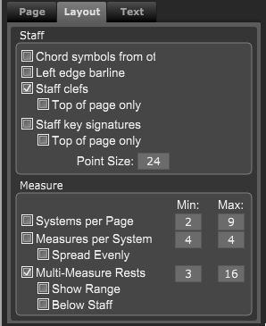

Active Parts Panel - Layout Section
If the Layout panel is not showing click on the Layout button at top right of Control Bar or type "Shift-L" to open the panel.
Then choose the Active Parts panel and then the Layout tab.

|
Staff
- Include chord symbols from other track - Include any chord symbols found on a different track
- Left edge barline - Set if you want the part to display a left edge barline.
- Staff clefs - Set to show clefs on the part.
- Staff key signatures - Set if you want key signatures displayed on part
- Point Size - The point size for this part
Measure
- Systems per page - If set, forces the number of systems on each page.
- Measures per system - If set, forces the number of measures per system.
- Multi-Measure Rests - If set,uses the min and max values for how many measures to combine into multi-measure rests.
Show Range - If set, show the entire range of included measures
Below Staff - If set, show numbers below staff.
|
|
|